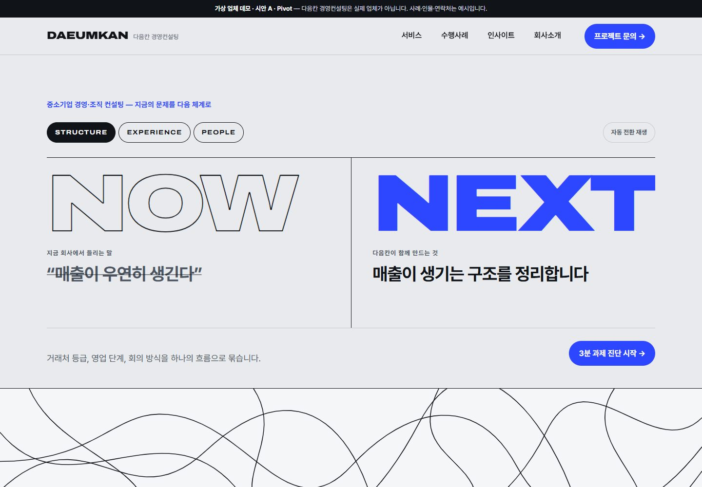
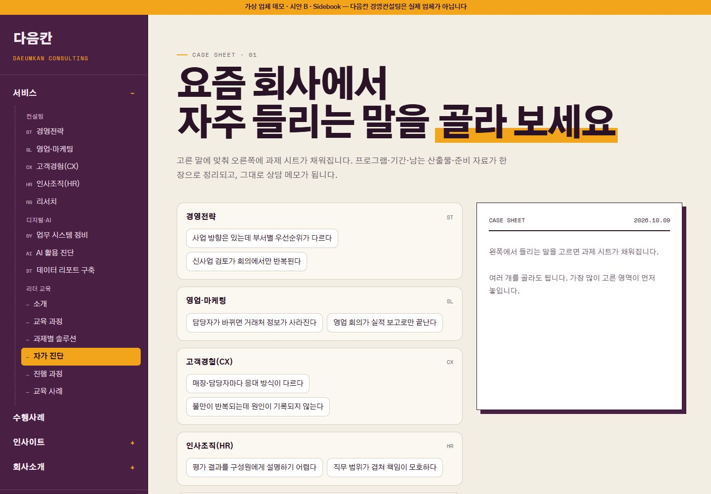
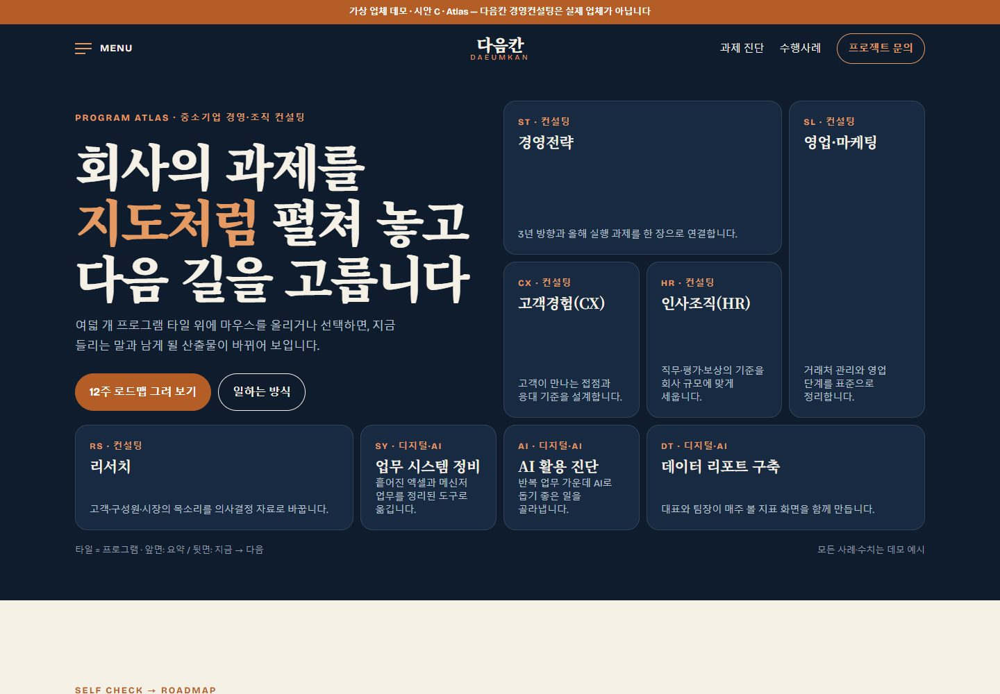

조합 1 선택 반영(이슈 #51) · 가상 업체 데모 · 2026-10-09
같은 Nextframe 콘텐츠,
세 가지 다른 첫인상.
세 시안은 모두 과제 진단·프로그램 선택형이며, 요청하신 대로 BX컨설팅의 1차 > 2차(> 3차) 메뉴 구조(서비스 › 컨설팅·디지털·AI·리더 교육 › 세부 프로그램 / 수행사례 / 인사이트 › 레터·기획조사·소식 / 회사소개 › 비전·거점)를 따릅니다. 메인 섹션도 같은 흐름(핵심 과제 → 서비스 → 진단·교육 → 사례 → 인사이트 → 거점)입니다. 추천은 A · Pivot입니다. 대비 타이포가 "지금 → 다음"이라는 컨설팅의 약속을 첫 화면에서 가장 선명하게 보여 줍니다.

A · Pivot · 추천
실버 미스트·잉크·일렉트릭 블루. NOW ↔ NEXT 초대형 대비 타이포와 얽힌 선 → 정돈된 그리드 전환.
- 메뉴: 상단 메가 드롭다운(1차 → 2차 열 → 3차 링크)
- 시그니처: 한 문항씩 넘기는 6문항 진단 → 영역별 막대·추천·메모
시안 열기 ↗

B · Sidebook
본·플럼·사프란. 왼쪽 고정 목차 사이드바와 종이 과제 시트, 표 형식 프로그램 목록.
- 메뉴: 왼쪽 트리(1차 펼침 → 2차 그룹 → 3차, 현재 위치 강조)
- 시그니처: "들리는 말" 16개를 고르면 과제 시트·기간·산출물·메모 완성
시안 열기 ↗

C · Atlas
미드나잇 네이비·아이보리·코퍼. 프로그램 8개를 지도 타일로 펼치고 뒷면에 지금 → 다음.
- 메뉴: 전체 화면 인덱스(큰 세리프 1차 → 2차 열 → 3차)
- 시그니처: 6개 눈금 진단 → 두 영역의 12주 로드맵 간트
시안 열기 ↗
메뉴 구성 (세 시안 공통)
- 서비스 — 컨설팅(경영전략 · 영업·마케팅 · 고객경험(CX) · 인사조직(HR) · 리서치) / 디지털·AI(업무 시스템 정비 · AI 활용 진단 · 데이터 리포트 구축) / 리더 교육(소개 · 교육 과정 · 과제별 솔루션 · 자가 진단 · 진행 과정 · 교육 사례)
- 수행사례
- 인사이트 — 레터 · 기획조사 · 소식
- 회사소개 — 비전·일하는 방식 · 거점 네트워크
시안은 메인 1페이지이므로 2·3차 메뉴는 해당 섹션·프로그램 상세로 이동합니다. 완성 단계에서 각 항목이 서브페이지가 됩니다.
디자인 지문
| 시안 | layout | hero | typePair | palette | signature |
|---|
| A · Pivot | contrast-type grid | NOW↔NEXT statement toggle | Archivo(확장폭) + Pretendard | silver mist · ink · electric blue | 단계형 6문항 진단 |
| B · Sidebook | sidebar-index | interactive symptom board | Gothic A1 + Space Mono | bone · plum · saffron | 증상 → 과제 시트 |
| C · Atlas | bento mosaic | program tile map | Noto Serif KR + Bricolage Grotesque | midnight navy · ivory · copper | 눈금 진단 → 12주 간트 |
사례·인물·연락처·거점 주소는 모두 가상 예시이며, 성공률·매출 증가율·지원금 확보액 같은 결과 표현은 쓰지 않았습니다(rules/pro.md). 진단·메모는 브라우저 안에서만 계산되고 서버로 보내지 않습니다. 동작 줄이기 설정을 지원합니다.
완성할 시안 선택
레퍼런스 비교 보고서 ↗ · 제출한 조합과 요청 보기 ↗